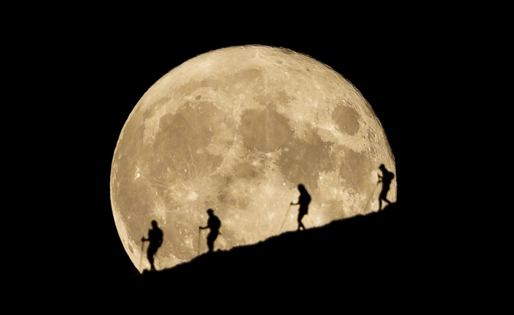
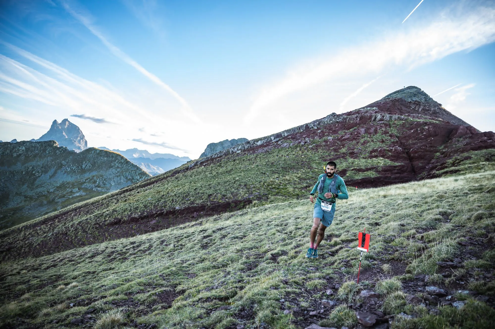
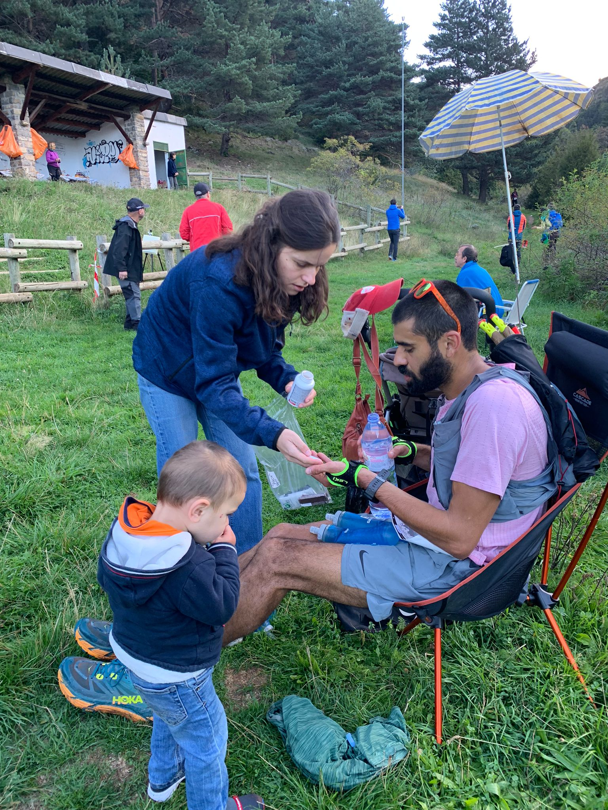
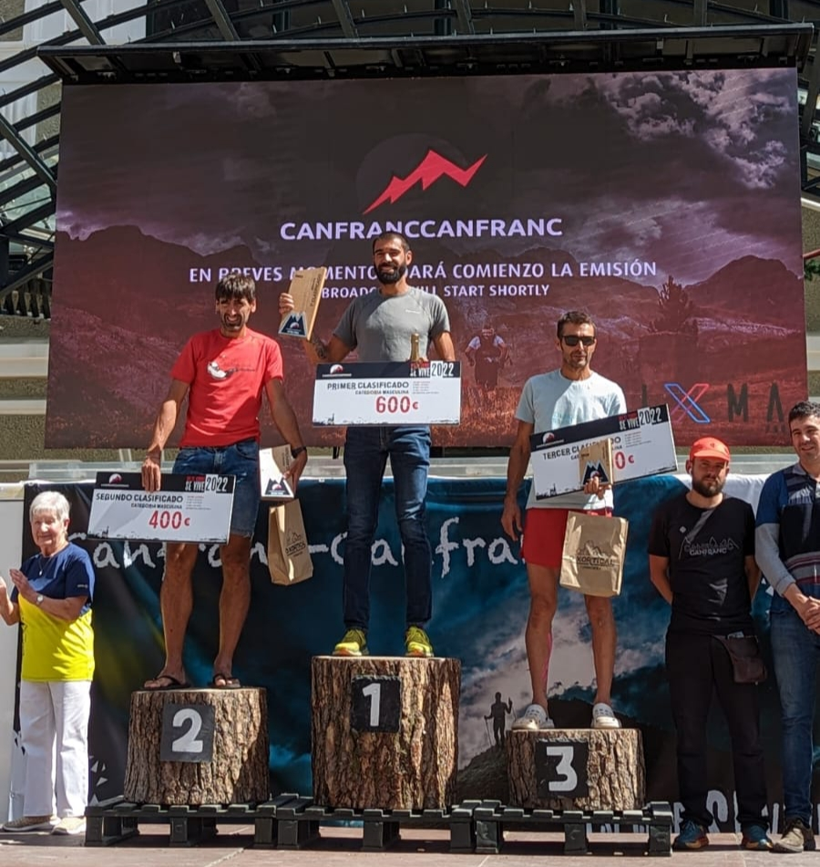
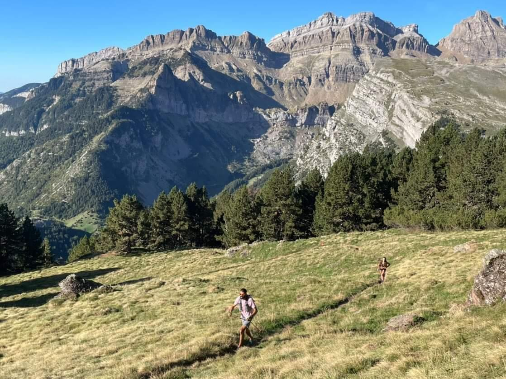

With the promise of 100km of untrod trail, 10 Pyrenees peaks and 9000m of climbing, I jogged into the night unhurried and with a
sense of looming adventure. The plan was to keep the pace comfortable, respect the challenge, and put up
a decent time.

Shaky Start
Within two hours I had damaged gear, a pack torn while dodging a cow and a Leki trekking glove shorn of its patent
technology. I resisted the urge to feel flustered. After the initial 1000m climb 1200m decent the route shoots 2000m to
the summit of Collorada (2886m). I went over in first, feeling pretty good. We had wind and freezing temperatures,
besides numb fingers, it was helpful to stay cool. Photo credit: yhabril
Novelty is Oblivion
The route remained relentlessly technical through the night with many steep descents on scree, rock-hopping,
side-hilling, loose couloirs, scrambly sections, exposed ridgelines— a wide sampling of the alpine environ. In a way the
difficulties were more approachable under cloak of darkness or ignorance as it were, the route unknown to me.
Energy levels were good until around 4am. On the decent off La Moleta I saw a headlamp bobbing in the night. He eventually passed and I latched on. We shared two hours without words due to the language barrier. We encountered a wild pig who looked to tusk us, sorted out the route where flags were absent, used the energy of the other to make good time. We rolled into the the Formigal aid station (50km) at dawn and I took the lead on the next climb.
Photo credit: Ruben Fueyo
Loose Screws
I met my crew at Canal Roya (62km), 10 minutes off course-record, feeling fresh. I ate a fruit cup, took salt and water
and set off with gels and drink. It was a relief to find smooth trail up La Raca. I ticked the 1000m ascent in an hour.
From the summit the route mostly follows the ridgeline border of France and Spain. On paper it looked runnable, but I
found it mildly devastating. Each summit was tiresome, giving way to stand of red flags tracing the ridge down and up
the hump of another. My time difference off record pace doubled on this section. In retrospect, I think the dramatic
increase in perceived effort was due to caloric deficit. Despite my intention to keep up with energy demands I had
willingly denied myself food to avoid nausea and was paying the price.

Til the Last
Although I was feeling poorly at Candanchu aid station, I had a sizable lead and two climbs left. The first was 1100m up
Pic Aspe. A looming broadhead on the horizon, it looked implausible that we were going up there and proved to be
the hardest two hours of the race. I climbed embarrassingly slow. At the summit I laid down as a volunteer scanned my
bib. “Campeon,” he said. “Animo!” shouted a group of hikers. I felt like death. I got up and started descending. Tough
it out, I told myself, keep moving.At the last aid I took a bottle of half-powerade/water which was going down easy. I feared the last climb, a relatively small one for the course, 350m over 1km. But suddenly I found strength where there was none. The same under-fueled, over-worked muscles were pumping, not like new, but pumping nonetheless. Momentum. The climb passed quickly. I could taste the descent. 52 switchbacks later I arrived in Canfranc Estacion, 18 hours 28 minutes after I set off.
I had wanted was to prove myself worthy on such a hard course. In the end, it didn't matter, what I felt was the casual indifference of mountains to the quixotic pursuits of men. Here I was where the river washes their feet, glad to be done and with my people.

Gear I would do Different:
- Running Pack
Salomon Sense Pro 10
This race required a lot of mandatory gear which over-burdened the pack. It was more difficult to organize and store nutrition and bottles and stow away poles. I think a beefier running backpack would be better.
Poles
Leki UltraTrail FX.1
The poles are great, since July I've climbed over 60,000m with them, but during the race it was clear they are at the end of their lifespan. The loop on my right glove broke meaning I had to grip the pole the entire race without any attachment to my hand. Seems trivial but its easy to lose grip and see the pole slide down the mountain. Also I had a hell of a time getting one of the poles open. The tension string was twisting during the descents and not allowing them to click easily into place, I wasted time unspooling them. As mentioned I trained A LOT with the poles without problems but they were a source of frustration during the race.
Gear that Shined:
- Headlamp
Petzl Iko Core
Comfortable and great 'ambient' lighting. Used two batteries during the night, alternating between standard and high beam when necessary. I've been using Black Diamond headlamps for years and will not being going back.
Shoes
Hoka Mafate Speed 3
A bit on the heavier side but definitely a good choice for this race. So many descents and ascents on loose, steep rock, the traction bit! Comfortable throughout.
Lessons and Reflections
The race was going swimmingly until it wasn't and as happens in an ultra, when you start losing time its very difficult
to get back on track. One problem I've had in long races is managing to get through low periods without hemorrhaging
time. Despite a lot of success in this race I was still unsuccessful trouble shooting the problem (nutritional deficit).
Instead of forcing myself to eat, I determined to suffer through it. Stubbornness goes a long way in an ultra but runs
in more than one direction. I did well to eat and drink for most of the race but my failure to do so correctly after 12
hours added significant time.
I was not very sore the day after the race which means I was well trained for the demands of the course. Check out my preperation here. Overall I am happy with my performance and grateful for an awesome day out. For all those Americans perpetually waiting to run Hardrock, come over to Spain and try Canfranc-Canfranc!